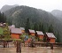
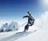
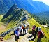
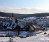

Hiking in Kosovo started with establishment of the first hiking association in
.One of the companies offering these services in Kosovo is the Balkan Natural Adventure . Additionally a big support to Kosovo hiking tourism was made by a German Development Agency program called The Peaks of the Balkans which goes through Kosovo, Montenegro and Albania.
|
Hiking Seasons
April to Dec is considered the most suitable time for hiking, as most passionate hikers are skiing during the cold winter months. However, with shorter ski seasons due to low snowfalls and the increasing popularity of hiking, a lot of hikers have begun to remain active during winter as well. Mountains in Kosovo are covered in snow from November to April that's why snowproof and waterproof boots are mandatory in the West due to the need for stream fording.The mountains preferred for hiking during hot weather are: Đeravica, Hasi mountains, Šar Mountains, Galla, Kopaoniku, Rogozna, Žuti kamen, Milishefci, Roshkodoli, Mariashi. As for the cold winter months, the preferred mountains are those that are lower in altitude and are less steep: Prevallë, Pashallore, Pashtriku, Brezovica, Brod outskirts, and Kortnik.
Hiking Trails
| Picture | Name | Length | Region | Difficulty |
|---|---|---|---|---|
|  | Guri i Kuq | 9.82 miles (15.80 km) | Peje | Moderate |
|  | Brezovica | 21.17 miles (34 km) | Ferizaj | Difficult |
|  | Gjeravica | 12.83 miles (20.64 km) | Peje | Moderate |
|  | Shatorice | 26.39 miles (42.47 km) | Leposaviq | Moderate |